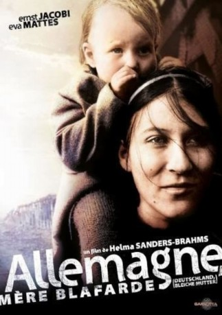

IMDB-Wertung: 7.2 / 10
IMDB-Wertung: 7.2 / 10  Metascore:
Metascore: 
Die Liebesgeschichte von Lene und Hans beginnt im Sommer des Jahres 1939. Durch den Krieg werden sie getrennt
 IMDB-Wertung: 7.2 / 10 Metascore:
Die Liebesgeschichte von Lene und Hans beginnt im Sommer des Jahres 1939. Durch den Krieg werden sie getrennt
Jahr: 1980
Dauer: 151 Minuten
FSK: 16
Land: West-Deutschland Studio: Basis-Film-Verleih GmbHTonspuren:
Untertitel:
Auflösung: 1080p (1920x1080) Größe: 10076 MB
Genre: Drama, Krieg, Geschichte
Regisseur: Helma Sanders-Brahms
Drehbuch: Helma Sanders-Brahms
Soundtrack: Jürgen Knieper
Darsteller:
Datei: X:\1980\Deutschland bleiche Mutter (1980, FSK16, 1920x1080).mkv seit 25.12.2018
Festplatte: HD 1980-1986
 Es gibt insgesamt 33 Filme in der Gruppe '1980'
Es gibt insgesamt 33 Filme in der Gruppe '1980'